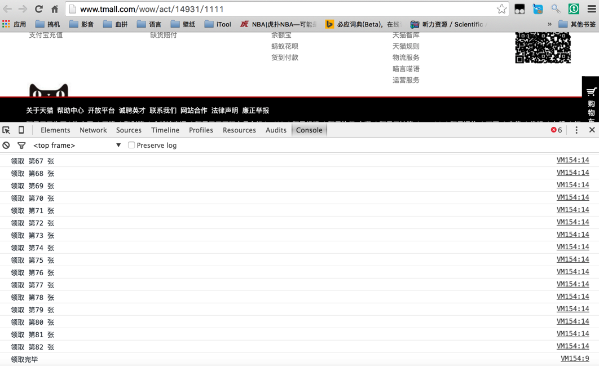

MJ壁纸记
起因
偶然刷微博的时候发现一名屌炸天的职业插画师HYPER-3 ，他一直为NIKE、Umbro等著名品牌提供作品。
在翻了一遍他的微博之后发现他在Instagram上也有更新:hyper-three

其中非常喜欢他画的那张FLY
Instagram原图：

随即回复表示愿意付费购买可以用做于iPhone 6 锁屏的该画


可能是最傻瓜的VPS-Bandwagonhost

Bandwagonhost 国内习惯称之为搬瓦工，美国IT7旗下的一款便宜年付VPS产品，因为价格便宜、稳定性好，得到不少的新用户和需要节省成本的用户喜欢，年付VPS最低3.99美元，拥有洛杉矶、凤凰城、佛罗里达、荷兰数据中心，而且可以任意切换机房达到随机更换IP的目的。
目前最为划算的套餐只有Bandwagon 10G - PROMO 年付仅需要19.99美元，直达链接在此: Bandwagon 10G PROMO
什么是VPS
VPS（Virtual Private Server 虚拟专用服务器）技术，将一部服务器分割成多个虚拟专享服务器的优质服务。实现VPS的技术分为容器技术，和虚拟化技术。在容器或虚拟机中，每个VPS都可分配独立公网IP地址、独立操作系统、实现不同VPS间磁盘空间、内存、CPU资源、进程和系统配置的隔离，为用户和应用程序模拟出“独占”使用计算资源的体验。VPS可以像独立服务器一样，重装操作系统，安装程序，单独重启服务器。简而言之，一台可供你调教的服务器。
你好2016

收获
生活
1、最大的收获毫无疑问就是儿子的到来，从刚出生头三天的打鸡血到领导做月子的一个月“双脱手”再到第二个月的为他改掉自己睡觉模式再到现在，这个小人儿已经让我的生活发生了如此之大的改变。爸爸会继续学习如何做一个陪你成长的好爸爸的 :-)
2、在领导的批准下第一次接触肾机，来年如果有机会的话，还是会考虑回到安卓
3、入手/续费了几个域名：自己相关的有三个 kianli.com 、 lizhichao.xyz 、 zhichao.li ; 给儿子买了个域名： nathanli.com
4、2015年里玩Postcrosing的频率真的不算高


适合新手的Markdown编辑器
作为Google Reader时代可能吧文章的忠实读者，昨天和阿婵禅在Telegram上竟然聊上了几句！注意，此处我如此激动的原因非常简单：阿禅是在维基百科上是有自己编的个人词条的。在吹嘘拍马用心聊天时，说到非常喜欢可能吧的文章排版非常喜欢，自己第一次看到Markdown写出来的博客的时候，第一反应是：这是可能吧排版的黑白版吧。
用图说话

在谈笑风声马屁拍到尴尬之后就开始放Google搜索，找了一圈，也试用安装再卸载了好一些软件，最后留下的就是一款叫做Haroopad的Markdown编辑软件。这边感谢推荐这款Haroopad Windows版的花生壳 经过使用，Haroopad的Mac版也非常堪用。
一些说明
我的Mac上因为之前自己白痴，找了网上的hexo教程，一个失败就直接换一个操作，导致系统混乱，连 Bao3也摊手了。 之后在 Bao3的
帮助代办下架设成功， Bao3哥推荐了我使用MWeb Writer，在他水银泻地一般地操作之后还顺带帮我写了个发布博客的小程序。虽然到最后我还是没有看懂，但是大概意思是通过MWeb Writer写完，把MWeb Writer本地文件夹里的内容直接发布到github page上的形式完成。MWeb Writer已经是一款非常优秀的Markdown编辑软件了，为什么还要找一款替代品？ 因为我不甘心，之后在Windows上配置成功Hexo, 开了个专门晒娃的博客。在断断续续地使用中意识到 hexo new post 这个命令指示生成md文件而已，但是里面的编辑还是需要自己敲对才行。
Haroopad
界面


SSAT考试作弊风波

什么是SSAT
相信很多人看到SSAT第一反应是不是我键盘连击了...
The Secondary School Admission Test, or SSAT, is an admission test administered by the Secondary School Admission Test Board (SSATB) to students in grades 3-11 to provide a standardized measure that will help professionals in independent or private elementary, middle, and high schools to make decisions regarding student admission.
------------------------------自Wikipedia
如果用中文来介绍的话：
SSAT，全称Secondary School Admission Test，中文名称为美国中学入学考试，适用于美国、加拿大私立中学的入学，是申请者所必须具备的一个考试成绩。主要测量学生的数学、语文以及阅读理解能力，考察考生的逻辑思维和发展潜力。由Admission Test Board命题。针对不同年龄的学生，SSAT考试分为高级（upper level）和低级（lower level），前者针对目前就读8-11年级的学生，后者针对目前就读5-7年级的学生。
－－－－－－－－－－摘自 百度百科
为什么要作弊?
SSAT考试有三大模块组成：
- Quantitative数学（2个Section,每个各25分钟，30道题）；
- Reading阅读理解(1个Section, 40分钟，40道题);
- Verbal词汇(1个Section, 30分钟 其中Synonym近义词30题，Analogies类比题30题：共60题) 三个部分的Scaled Score每个模块各800分，总分2400分


双十一优惠券自动领取
双十一就要到了 淘宝也开始了各种预热活动，天猫上也开始了提前抢购／券的活动，参与商家不少，优惠券有划算的，但是估计数量不多。因为这点，就会出现一个问题：
手动抢太浪费时间了
应该有办法帮助我们自动抢的


Vultr日本服务器VPS配置笔记
为什么写这篇笔记
之前看到bao3大哥在博客里发布了一篇在 Vultr上安装 Arch linux的文章。
在bao3大哥的帮助下，完成了服务器的配置。几天使用下来，感觉非常不错。对于我来说Vultr的优势在于价格实惠，速度快，最重要的是提供snapshot功能，也就是说配置成功一台服务器，就可以克隆配置到新的服务器里。按照bao3大哥的提示，选择了日本ip的服务器，选择日本服务器的原因很简单，因为日本ip可以让你能够访问一些限定日本ip的网站。
bao3大哥在 Vultr上安装 Arch linux一文中已经有了非常详细的步骤指引，但是对于像我这种技术渣来说，如果每一个步骤都变成傻瓜的形态应该是更好的。所以也就有了这一篇文章
准备工作
1: Paypal帐号注册
参考：如何注册Paypal帐号并关联银联信用卡一文
2: ArchLinux的iso镜像:
参考:在 Vultr上安装 Arch linux一在 Vultr上安装 Arch linux文中给出的镜像地址:
http://ftp.jaist.ac.jp/pub/Linux/ArchLinux/iso/2015.08.01/archlinux-2015.08.01-dual.iso
Copyright © 2015 Powered by MWeb, Theme used GitHub CSS.